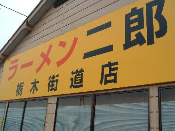
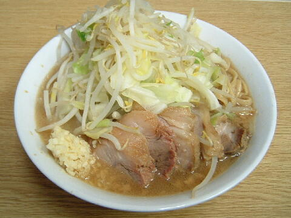
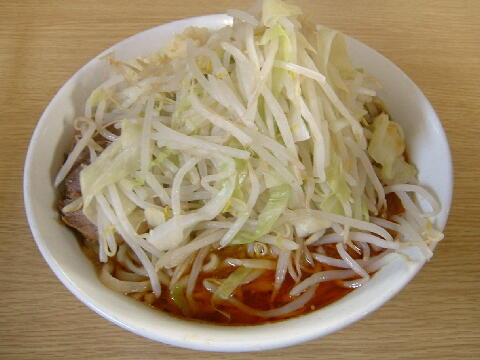
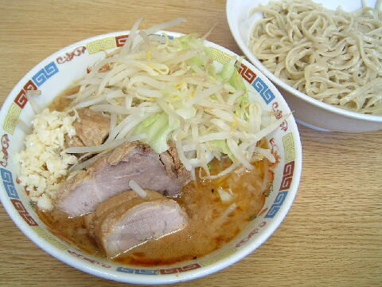

下都賀郡 壬生町 本丸 2-15-67
日・祝
11：30〜14：45 18：00〜21：00
土 11：30〜15：30

ラーメン 700円、ラーメン豚入り 850円、ラーメン豚入りダブル 950円
大ラーメン 800円、大ラーメン豚入り 950円、大ラーメン豚入りダブル 1050円
normal 700円
つけ麺 ＋150円
カツオくん 150円、うずら（5コ） 100円、ショウガ 50円
生玉子（那須御養卵） 50円（現金）、鰹ぶし 50円（現金）、岩下のピリ辛らっきょう 100円（現金）
店員は、多摩で修行した元自衛官の店主と助手。
黒コショウ（ギャバン）、一味唐辛子。
あと、給水機の上にサービスの香辛料（カレーパウダーや激辛唐辛子等）がある時もある。
レンゲ有。ティッシュ有。名刺無。
BGMは、オーディオからのFMで大島優子（壬生高出身）センターの曲が流れていた。
トッピングは、二郎基準。
栃木街道店 栃木街道店のTwitter
「ラーメン二郎 栃木」でヤフー検索
「ラーメン二郎 栃木」でヤフーリアルタイム検索
「ラーメン二郎 栃木」でグーグル検索

ラーメン豚入り ニンニク
麺は、ツルツル、プリプリした平打ちな多摩系二郎の麺だべ！
女性とお子様は少なめになるのでnormalの食券を利用すると通常の盛りとなる。
ぶたは、ブランド豚（郡司豚）を使用しており、味付けや食感も好くて、ごでっしりと盛られる。
スープは、醤油の効いた微乳化傾向のもの。豚の出汁がよく出ていて旨い。
ヤサイは、モヤシ7：キャベツ3の割合で程好い茹で上がり。量は多め。
ニンニクは、微細に刻まれたニンニクがいっぺ。

ラーメン＋TARO ニンニク
＋100円（現金）でつけ麺味のTARO（TSUKEMEN AJI RAMEN JIRO）にすることができる。
辛さ調節もしてくれる。甘いのにもできる。

ラーメン＋つけ麺 ニンニク
トッピングはラーメンと同じ。
つけ汁の丼には、ヤサイとぶたが入る。ニンニクはこちらに。
粘度の高いタレに背脂。ピリ辛で胡麻ラー油の風味が絶妙。
麺の丼には、シナシナした食感の麺。これはこれで美味。あつもりは不可。
つけ麺は「甘いの」にもできる。辛さ調節もしてくれる。
期間限定（夏季限定）
ＰＣ店